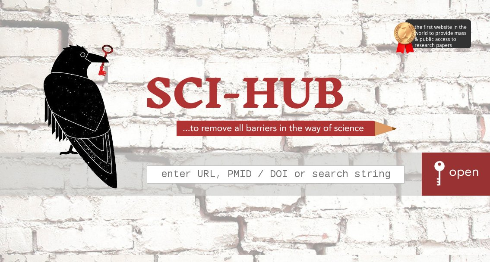
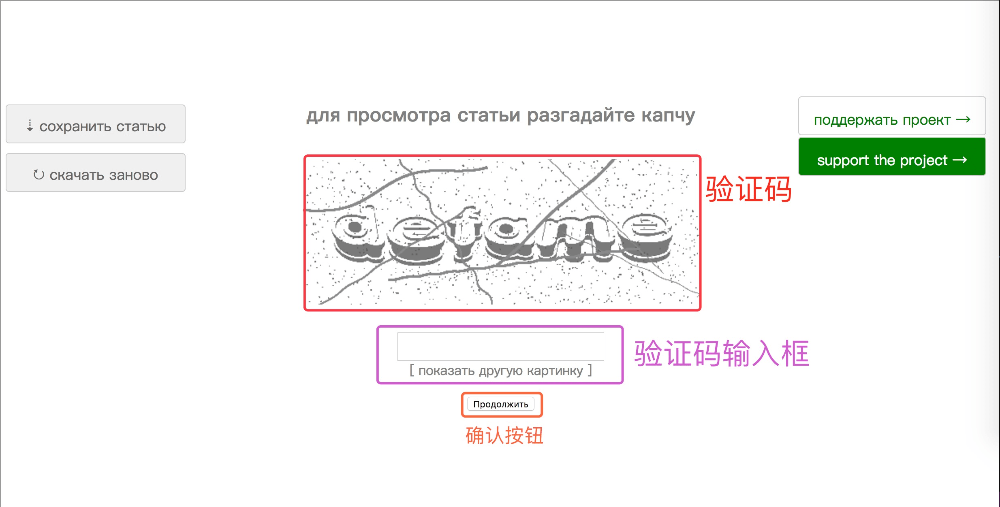

科研人员经常要看一些全文，但由于单位不可能花钱购买所有数据库的下载权限， 因而会经常需要需要付费下载文章的情况。本文将介绍文献下载的好工具 sci-hub， 可以下载到绝大多数外文期刊的文章甚至书籍。
sci-hub 网站
sci-hub 是一个在线网站，可以下载众多本该付费下载的文章，因而本质上是非法的， 用户请自行判断。原始域名已经被封禁，目前可用的网址有：
更多可用链接见 http://tool.yovisun.com/scihub/
使用方法
下面将用多种方法演示如何下载地球科学引用率非常高的一篇文章 Preliminary reference Earth model。
要下载一篇文章，需要知道如下两个信息中的至少一个：
- 文献的官方网址，比如 http://www.sciencedirect.com/science/article/pii/0031920181900467 ， 可以通过 Google Scholar 等网站搜索得到
- 文献的DOI，比如
10.1016/0031-9201(81)90046-7，可以从文章的官方网站上找到， 现在大多数文章的参考文献也要求给出DOI信息
DOI 是 Digital Object Identifier 的缩写，也叫唯一标识符，是国际通用、 全球唯一、终身不变的数字资源标识符。正如我们每人都有自己独一无二的身份证号一样， DOI代码具有唯一性，一旦分配，终身不变。已知DOI，将 DOI 加到 https://dx.doi.org/ 后 （例如 https://dx.doi.org/10.1016/0031-9201(81)90046-7 ）即可跳转到该文章的真实网址。
到 sci-hub 网站下载
访问 sci-hub 网址，比如 http://sci-hub.tw/ ，如下图所示：

将文献网址或DOI粘贴到搜索框中，按下确认键或点击搜索框右边的open按钮即可。
直接利用网址下载全文
打开文章对应的网址，在域名的后面加上 sci-hub 的域名，比如 .sci-hub.tw 即可。
例如，这篇文章的网址是 http://www.sciencedirect.com/science/article/pii/0031920181900467 ， 在域名的后面加上 sci-hub 的域名，变成： http://www.sciencedirect.com.sci-hub.tw/science/article/pii/0031920181900467 即可直接下载文章全文。
直接利用DOI下载全文
已知文章DOI的前提下，直接在 sci-hub 域名后面加上 DOI 即可，比如直接访问 http://sci-hub.tw/10.1016/0031-9201(81)90046-7 即可下载文章全文。
注意事项
当文献下载过频繁会要求用户输入验证码，如下图：

DOI是如
10.1016/0031-9201(81)90046-7这样的字符串，前面不要带doi:等其他字符。sci-hub 不支持下载国内期刊的文章